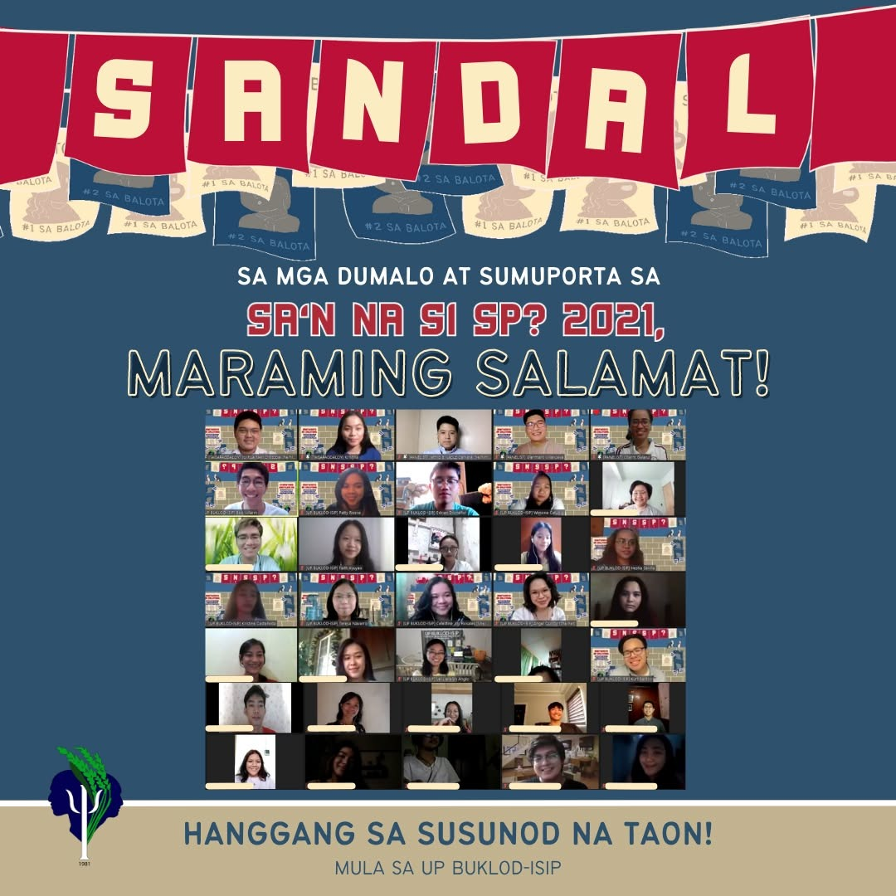

Renaissance · Research & Public Conversation · Case
Sa’n na si SP?
A roundtable on Sikolohiyang Pilipino, political participation, and what happens when psychology leaves the classroom and enters a public conversation about how choices are formed.
Year: 2021
Why this case matters
What is psychology for if it never has to meet the conditions people are living through?
In November 2021, I was part of the organizing team behind Sa’n na si SP?, a roundtable discussion examining Filipino voting behavior and public participation with selected public school senior high school students.
The event brought perspectives from law and psychology into the same conversation. I also served as a facilitator together with fellow organization member Ishie.
For me, the more important question was not simply what students thought about politics. It was how political judgments are formed, and whether psychology can help people examine those processes without pretending to decide their conclusions for them.
Documentary record
A public conversation on psychology and participation.
UP Buklod-Isip organized the November 27, 2021 roundtable around the question of Sikolohiyang Pilipino's role in Filipino public participation.


Case record
Building a space for inquiry rather than instruction.
- Role
- Organizing Team & Co-facilitator
- Co-facilitator
- Ishie, fellow organization member
- Date
- November 27, 2021
- Audience
- 120 selected public school senior high school students
- Perspectives
- Law and psychology
- Focus
- Filipino voting behavior and public participation
The conversation
Political choice is an outcome. The more interesting question is how people arrive there.
The discussion asked students to look beyond candidates and campaign messages and examine the conditions around political decision-making: information, identity, relationships, values, emotion, institutions, and social context.
What made the conversation especially useful was the ability to look for patterns across different ways of understanding behavior. A political science graduate could situate choices inside institutions, power, and civic structures. A psychology professor could examine the concepts and theories that help explain how people think, feel, and relate. A psychology researcher could ask what the available evidence actually supports and where interpretation still needs caution.
My role as facilitator was to listen for the connections among those perspectives and help weave them into a story the students could interrogate for themselves. The point was not to collapse the disciplines into one answer, but to notice where they converged, where they complicated one another, and where a harder question became possible because one perspective exposed what another had left unseen.
The purpose was not to tell students what to think or whom to support. It was to create a setting where they could examine how judgments are formed and become more conscious of the forces that can shape their own reasoning.
Facilitation
Listening is not passive. Sometimes it means asking the harder question calmly enough for people to stay with it.
Co-facilitating the roundtable with Ishie made me think differently about listening. Good listening is not simply waiting for someone to finish speaking. It also means noticing what has not yet been asked, where an assumption is being left untouched, and when a conversation needs a more difficult question.
The harder part is how that question is presented. A question can be rigorous without being combative. It can challenge an idea without humiliating the person expressing it. Composure matters because the purpose of facilitation is not to win the room. It is to keep the room open enough for people to think more carefully.
That became especially important in a discussion about political choice. The facilitator should not become the answer. Our role was to help students examine how judgments are formed while preserving their own responsibility for the conclusions they eventually reach.
Psychology beyond the classroom
Understanding society does not place us outside it.
The event also complicated the boundary between studying society and participating in it.
Psychology can describe attitudes, identities, relationships, and collective behavior. But students of psychology are themselves part of the communities they study. The questions we choose, the language we use, and the problems we decide deserve attention are also forms of participation.
Sikolohiyang Pilipino made that question especially relevant for me: how do we develop ways of understanding behavior that remain connected to Filipino experiences rather than treating those experiences as distant objects of analysis?
Renaissance
Research should help us understand the world. Renaissance asks what happens when that understanding enters the world again.
The discussion was not valuable because psychology could provide a final explanation of Filipino political behavior.
Its value was in creating better questions, bringing disciplines into conversation, and giving young people room to examine how their own judgments are formed.
What I carry forward
Democratic participation depends not only on speaking, but on learning how to listen before deciding.
Suffrage is one of the formal mechanisms through which citizens participate in democratic government. The ballot matters because it gives people a way to translate judgment into public choice.
But the act of voting happens after a much longer process of listening, interpreting, comparing, trusting, doubting, remembering, and deciding. That is why I left the roundtable thinking less about persuasion and more about the quality of the questions people encounter before they make a choice.
Listening, for me, became part of civic responsibility. It means being willing to hear an answer you did not expect, recognize patterns across different perspectives, and ask the harder follow-up when something does not hold together. It also means presenting that challenge with enough composure that the conversation does not collapse into defensiveness.
Facilitation therefore became an act of synthesis. I was listening not only for what each speaker said, but for how their explanations of behavior could be placed beside one another: institutions and power from political science, psychological concepts from teaching, and evidence and interpretation from research. The story emerged from the relationship among those perspectives, not from any one of them alone.
Sa’n na si SP? reminded me that public conversation is most useful when it strengthens people's capacity to think rather than attempts to think for them. Protecting the space for independent judgment is as important as asking difficult questions inside it.
Creativity → Renaissance
Return to the wider engagement.
Explore Research & Public Conversation for more cases about inquiry, evidence, interpretation, exchange, and what happens when ideas leave the room where they were first formed.
Research & Public Conversation →